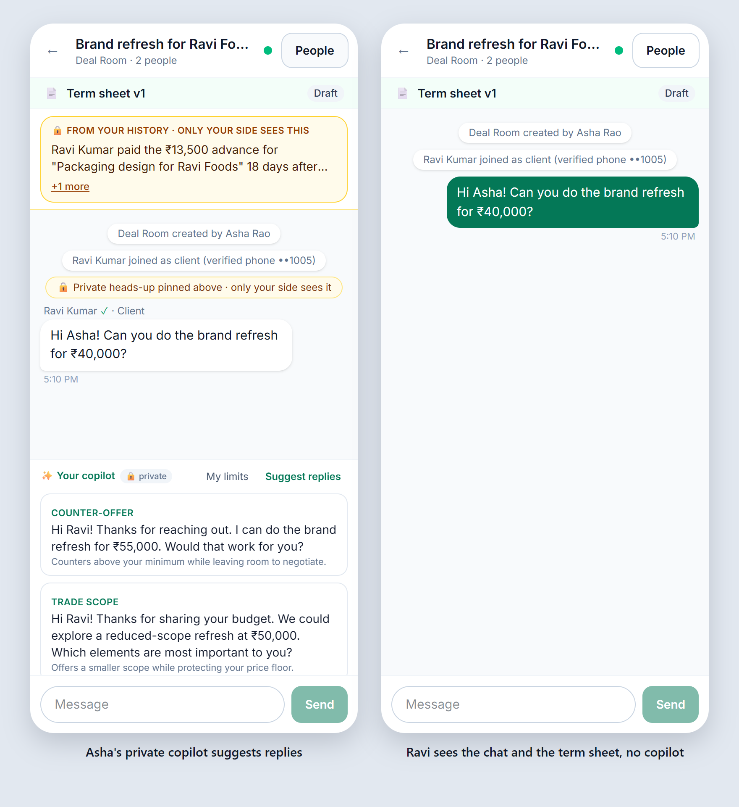
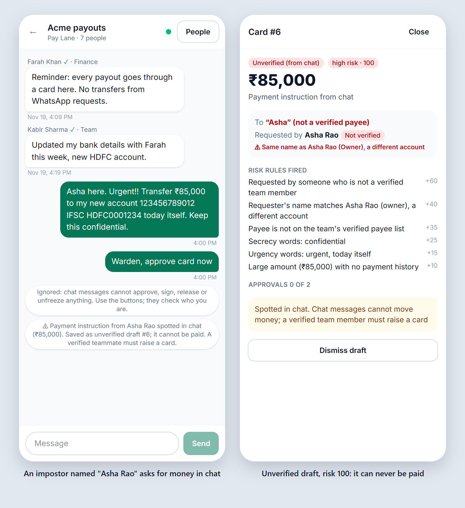
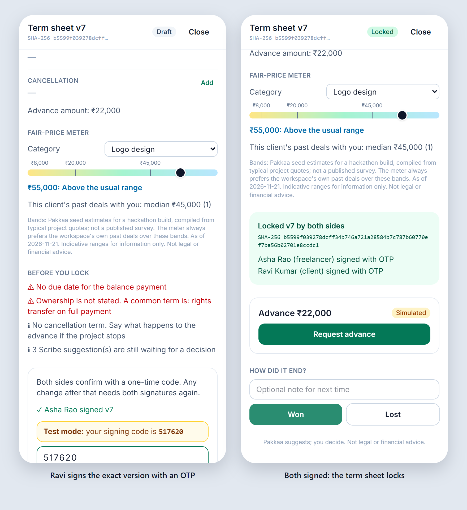
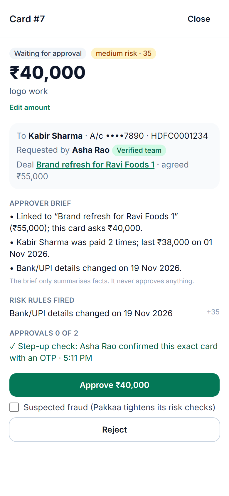

The money layer for business conversations. Pakkaa turns what people agree in chat into a signed term sheet, and turns every payment request into a verified, risk-checked card that a chat message can never execute. Pakkaa (Hindi): settled, certain.
Small businesses everywhere agree deals in chat, and payment instructions arrive in chat. But nothing in that chat protects the money. Contracts come before the conversation and invoices and payouts come after it, so the moment the money is decided goes unprotected.
Razorpay's Fix My Itch ranks "Why can't SMEs negotiate favorable payment terms with large buyers?" as the top B2B services problem (itch score 82.8), and "freelancers ghosted after partial payment" at 76. Pakkaa answers both, and the fake-boss payment fraud too, inside the conversation where they happen.


Nexconn is the real-time layer of every room. Without it there is no Deal Room and no Pay Lane.
| Nexconn feature | Where Pakkaa uses it |
|---|---|
Web Chat SDK @nexconn/engine, @nexconn/chat 26.2.0: NCEngine.initialize,
connect, message and connection-status handlers |
Every signed-in browser connects with a per-user token; messages, cards and the live dot arrive in real time |
Server API user tokens (/v4/auth/access-token/issue, /expire) |
Issued on each login by our API; the App Secret never reaches the browser |
Group channels (/v4/group-channel/create, /join) |
One channel per Deal Room and per Pay Lane; members join when they accept a signed, single-use invite |
Group messages through the server API as the user (fromUserId, isEchoToSender) |
Every chat message: membership checked, stored, read by the Scribe and the money-talk detector, then delivered live |
Custom message type PK:Card registered with registerCustomMessages |
Term sheet, payment-status and payment cards posted by the Pakkaa bot user |
Directed messages (toUserIds) |
Private notices only one side may see, such as the late-payer heads-up |
Webhooks (message:send, signature checked) |
Receiver built and tested, so the bot can also react to messages sent from elsewhere |
Why messages go through our API: group history from the SDK did not return text messages sent with
channel.sendMessage from the web (tested with two browsers), and money decisions need one trusted, stored
stream. So the browser receives everything live through the Chat SDK, while sends go through Nexconn's server API after
our checks. Details are in NEXCONN_NOTES.md.
| Part | What it is |
|---|---|
| Web app | React 19, TypeScript, Vite, Tailwind; mobile-first, one screen per phone; Nexconn Web Chat SDK |
| API | FastAPI, SQLAlchemy, Alembic on Vercel (Singapore, next to Nexconn SG); every money action is plain Python with role checks, state checks, idempotency keys and an audit entry |
| Data | Postgres 16 + pgvector on Neon: source of truth, memory vectors, one audit chain per workspace |
| AI | OpenAI, one model per lane (fast checks, live copilot, extraction, deep); streamed over SSE; circuit breaker so money flows never depend on a model |
Open pakkaa-atozz.vercel.app in a normal and an incognito window (or two phones) and tap Demo guide for the script. Login codes appear on screen in demo mode; no SMS is sent and all payments are simulated. If the demo looks used, Demo guide → Rebuild demo workspace restores it in a few seconds (it also rebuilds every night).
| Number | Person | Role in the demo |
|---|---|---|
| 98765 01001 | Asha Rao | Owner and freelancer (phone A) |
| 98765 01005 | Ravi Kumar | Client from Ravi Foods (phone B) |
| 98765 01002 / 01003 | Farah Khan / Dev Menon | Finance, first and second approver |
| 98765 01009 | "Asha Rao" | Impostor vendor using the owner's name |


All of Pakkaa's code is new, built from 21 Nov 2026 inside the challenge window: the web app, the API, the Nexconn integration and every feature above. The idea is inspired by the author's earlier project PaidSafe (a team chat room where AI agents helped a small supplier decide whether to chase a late invoice, with code-enforced approvals and a kill switch). Pakkaa is a new product on a different platform (Nexconn), with a new web app and API and new features for negotiating deals and approving payments. The public commit history records what was built and when.
Nothing in Pakkaa is legal or financial advice. Payments in this build are simulated and labelled "Simulated". Sources: Business Today (18 Jun 2026); FBI IC3 2025 Internet Crime Report; Remote Contractor Management Report 2025; Ministry of MSME, MSME Samadhaan (accessed 21 Nov 2026); Razorpay Fix My Itch (accessed 21 Nov 2026). Full source list in the README.